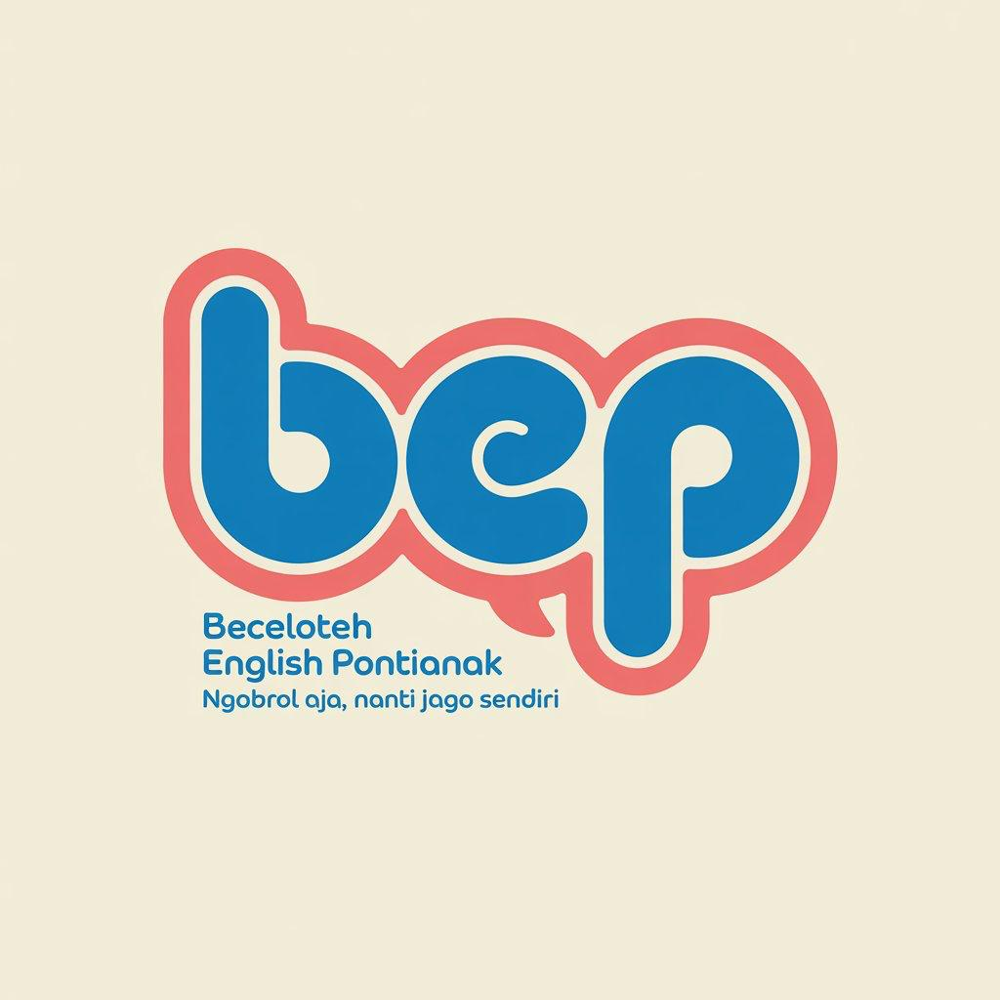
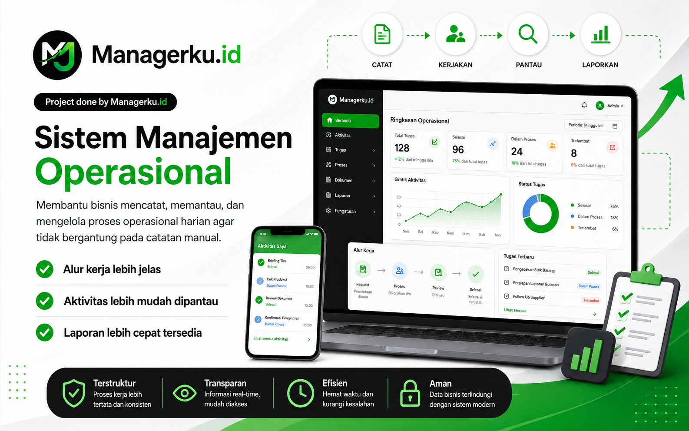
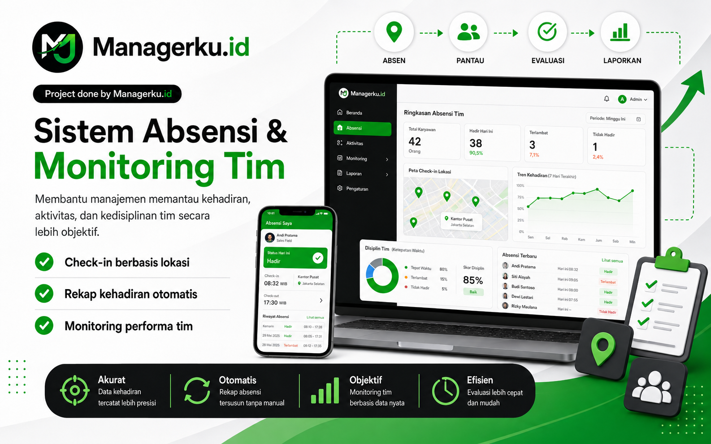
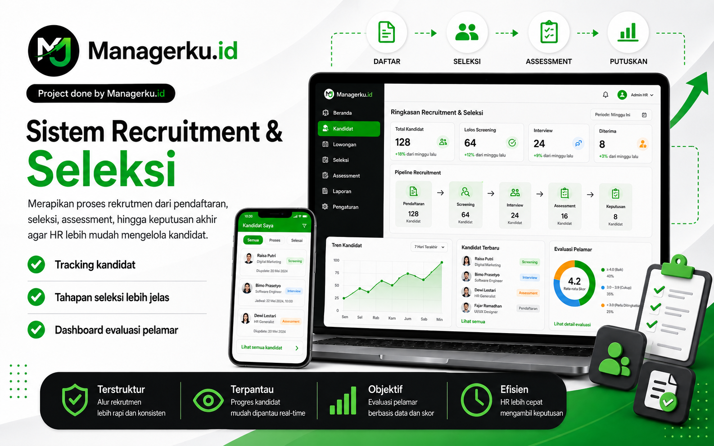
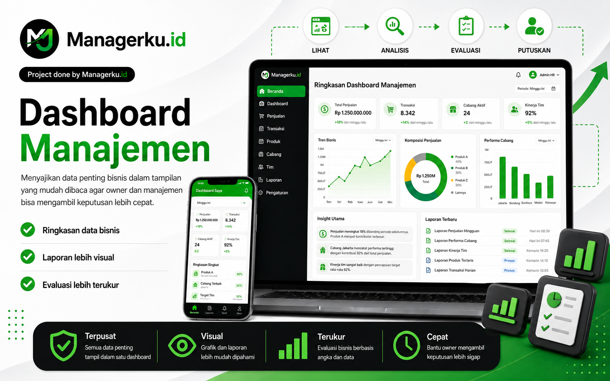
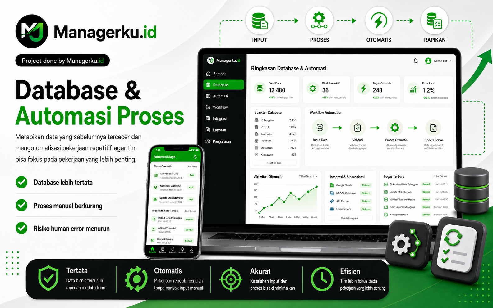
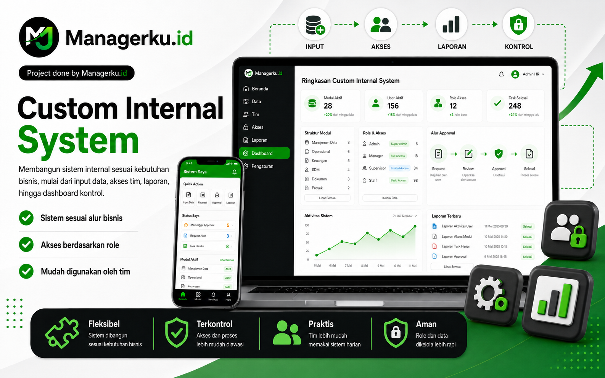

TRUSTED PARTNERS
Dipercaya untuk Membantu Merapikan Sistem Kerja
Kami membantu bisnis, lembaga, dan tim operasional membangun sistem yang membuat pekerjaan lebih tertata, data lebih mudah dibaca, dan proses harian lebih mudah dikontrol.


Managerku.id membantu bisnis membangun sistem kerja yang lebih rapi, terukur, dan mudah dipantau, mulai dari alur operasional, aktivitas tim, database, laporan, hingga dashboard manajemen.
Problem
Solution
Result
Lebih rapi dan tidak tercecer
Lebih mudah dipantau
Lebih siap dievaluasi
TRUSTED PARTNERS
Kami membantu bisnis, lembaga, dan tim operasional membangun sistem yang membuat pekerjaan lebih tertata, data lebih mudah dibaca, dan proses harian lebih mudah dikontrol.

OUR WORK
Setiap bisnis punya masalah operasional yang berbeda. Karena itu, kami membangun sistem berdasarkan alur kerja nyata, bukan sekadar fitur. Fokusnya adalah membantu bisnis bekerja lebih rapi, lebih cepat, dan lebih mudah dievaluasi.

Membantu bisnis mencatat, memantau, dan mengelola proses operasional harian agar tidak bergantung pada catatan manual.

Membantu manajemen memantau kehadiran, aktivitas, dan kedisiplinan tim secara lebih objektif.

Merapikan proses rekrutmen dari pendaftaran, seleksi, assessment, hingga keputusan akhir agar HR lebih mudah mengelola kandidat.

Menyajikan data penting bisnis dalam tampilan yang mudah dibaca agar owner dan manajemen bisa mengambil keputusan lebih cepat.

Merapikan data yang sebelumnya tercecer dan mengotomatisasi pekerjaan repetitif agar tim bisa fokus pada pekerjaan yang lebih penting.

Membangun sistem internal sesuai kebutuhan bisnis, mulai dari input data, akses tim, laporan, hingga dashboard kontrol.
ABOUT MANAGERKU.ID
Banyak bisnis berkembang bukan karena kurang kerja keras, tetapi karena proses operasionalnya belum tertata. Data masih tersebar, laporan sulit dibaca, aktivitas tim tidak selalu terpantau, dan owner sering menjadi pusat dari semua keputusan.
Managerku.id hadir untuk membantu bisnis merapikan hal itu. Kami memetakan masalah operasional, memahami alur kerja, lalu membangun sistem yang membuat proses bisnis lebih mudah dijalankan dan dievaluasi.
Fokus kami bukan hanya membuat aplikasi, tetapi menciptakan sistem kerja yang membantu owner, manajer, dan tim melihat apa yang sedang terjadi di dalam bisnis dengan lebih jelas.
Kami bantu menyusun alur kerja agar proses harian lebih jelas dan tidak berjalan berdasarkan ingatan saja.
Kami bantu mengubah data mentah menjadi laporan yang lebih rapi, mudah dibaca, dan siap dievaluasi.
Kami bantu membuat sistem monitoring agar aktivitas dan tanggung jawab tim lebih transparan.
Kami bantu membangun sistem agar owner tidak harus selalu mengecek semuanya satu per satu.
LET’S BUILD YOUR SYSTEM
Ceritakan masalah operasional yang sedang kamu hadapi. Kami bantu petakan alurnya dan rekomendasikan sistem yang paling sesuai untuk membuat bisnismu lebih mudah dikontrol.
Managerku.id — Membantu bisnis bekerja lebih rapi, terukur, dan mudah dikontrol.